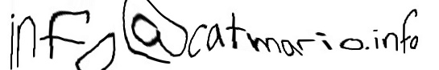

Home
Contact
About
catmario-site.github.io
Contact
You can contact me if you find problems on this website
or if you have any questions regarding the game.
I am NOT the creator of Syobon Action ( but I have experience in the game ☺ ) :
